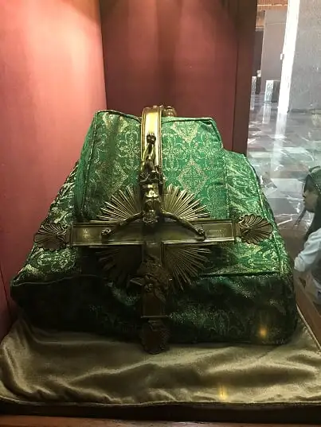

Last month, I took part in an international press event in Mexico City. Along with other journalists, including a group of faith-based communicators, I flew there to preview the horror film, “The Nun” — a prequel, fourth release, in the popular The Conjuring series.
The experience, hosted by Warner Bros. Pictures, included previewing the film at an old convent in the Mexican mountains, touring the catacombs during a thunderstorm, and interviewing two of the main actors and director. I share more about this adventure at roxanesalonen.com/blog/.
Saying yes to this invitation meant facing my fears in the extreme. A tumultuous plane ride earlier in the summer made me uncertain I’d fly anywhere ever again. But the phrase repeated often in Scripture, “Do not fear,” entered my consciousness, and I decided to go.
It meant being “dropped” into another country in which I knew only minimal language and watching a film I wouldn’t have sought out on my own.
It also meant staying open to the gifts God might have in store, and possibly, if time, visiting Our Lady of Guadalupe Basilica — a bucket-list dream.
Thankfully, not only did time allow, but a real nun on the trip ended up being my tour guide. Sister Rose showed me every nook and cranny of the grounds, the most visited apparition site in the world.
For those unfamiliar, in 1531, Jesus’ mother appeared to Juan Diego there, affecting the conversions to Christianity of 9 million inhabitants over a period of seven years.
Mary gave Juan the gift of roses in December to prove the apparition to the local bishop, placing them in his burlap cloak, or tilma. When Juan opened the cloak before the bishop, the flowers fell to the ground, and on its surface was an image of Our Lady of Guadalupe.
The tilma is displayed there to this day, behind the altar, where I participated in Mass. I also observed the faithful in long lines for confession, and people openly crying out to God. I cried, too, in witnessing this visible and beautiful faith.

Fittingly, my day at the basilica came hours after viewing “The Nun,” a fictional account of evil inside a convent. And any possible ill effects from viewing the film vanished in the presence of the living God.At one point, Sister Rose brought me to a display of a gold crucifix that had been bent nearly in half after a bomb containing 29 sticks of dynamite was placed in a pot of roses under the tilma in 1921 and set off; the tilma remained untouched.
Looking at the bent cross, I was reminded that when we have God on our side, no evil can touch us. For the God of the universe will simply bend it back and thrust it away, like a boomerang. Stay near God, our protector, our hope, our everything. There’s nothing fictional about him, and that’s the God’s-honest truth.
[For the sake of having a repository for my newspaper columns and articles, I reprint them here, with permission, a week after their run date. The preceding ran in The Forum newspaper on Sept. 15, 2018.]